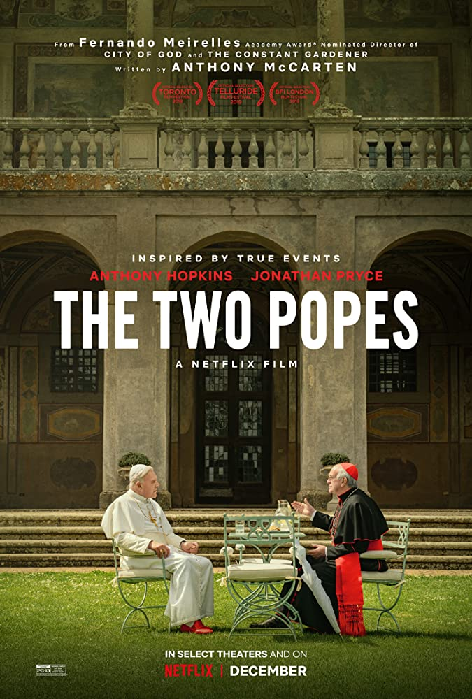
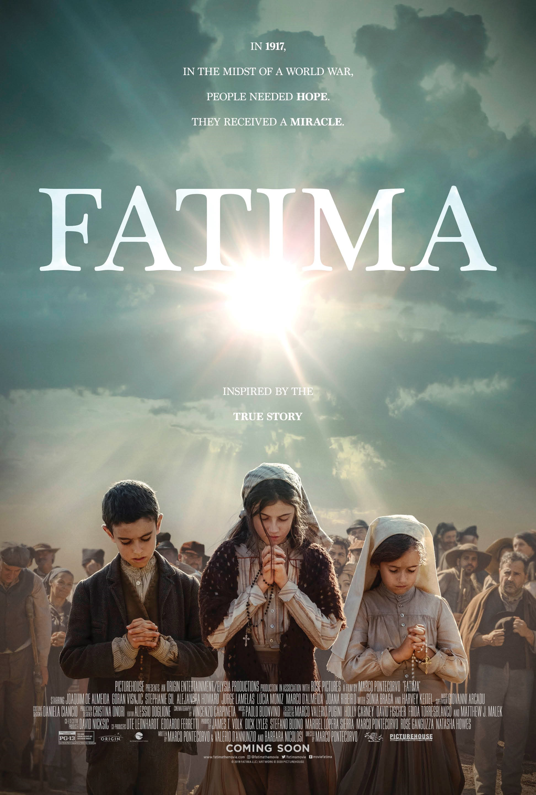

HOME / MOVIE
When an unconfident young woman is cursed with an old body by a spiteful witch, her only chance of breaking the spell lies with a self-indulgent yet insecure young wizard and his companions in his legged, walking castle.
Two strangers find themselves linked in a bizarre way. When a connection forms, will distance be the only thing to keep them apart?
Behind Vatican walls, the conservative Pope Benedict XVI and the liberal future Pope Francis must find common ground to forge a new path for the Catholic Church.
Based on historical events, three young shepherds in Fátima, Portugal, report visions of the Virgin Mary, inspiring believers and angering officials of the Church and the government, who try to force them to recant their story.